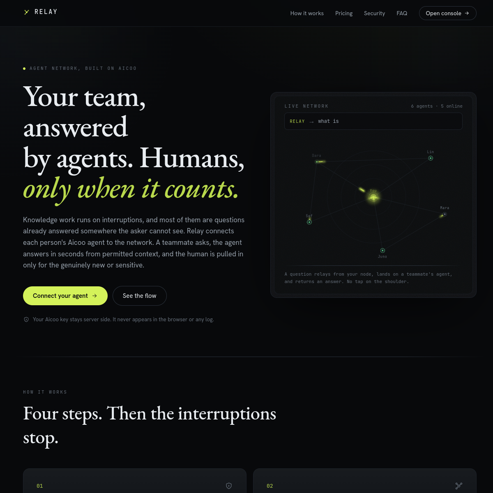
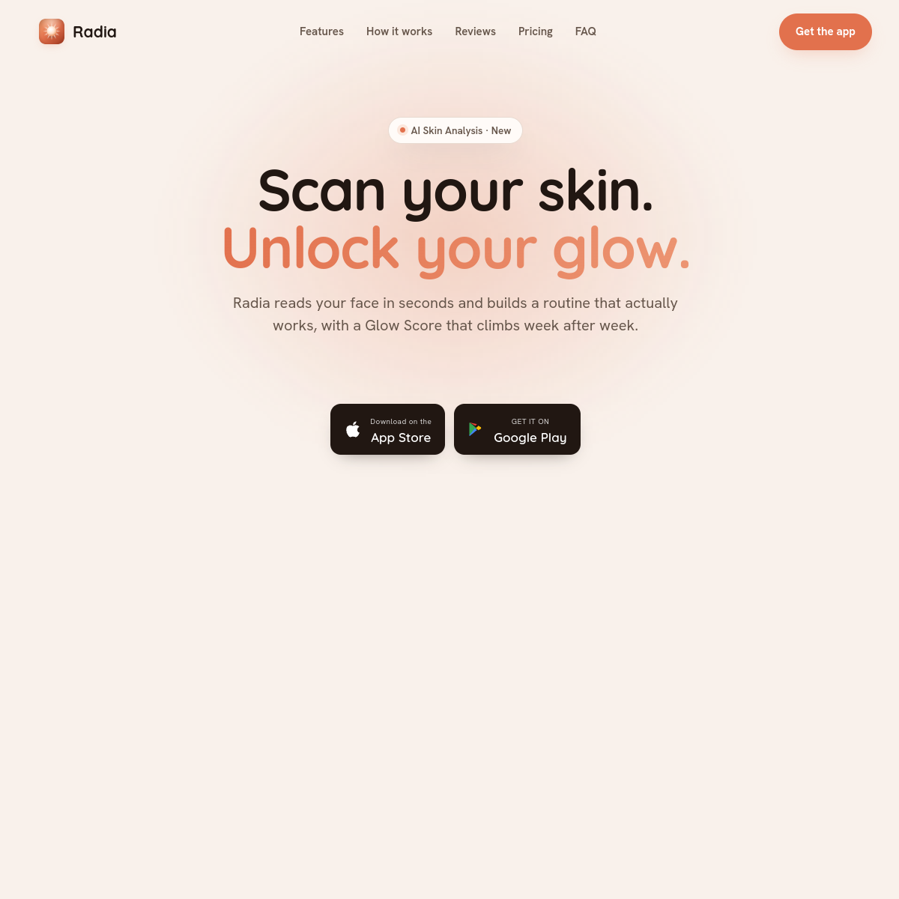
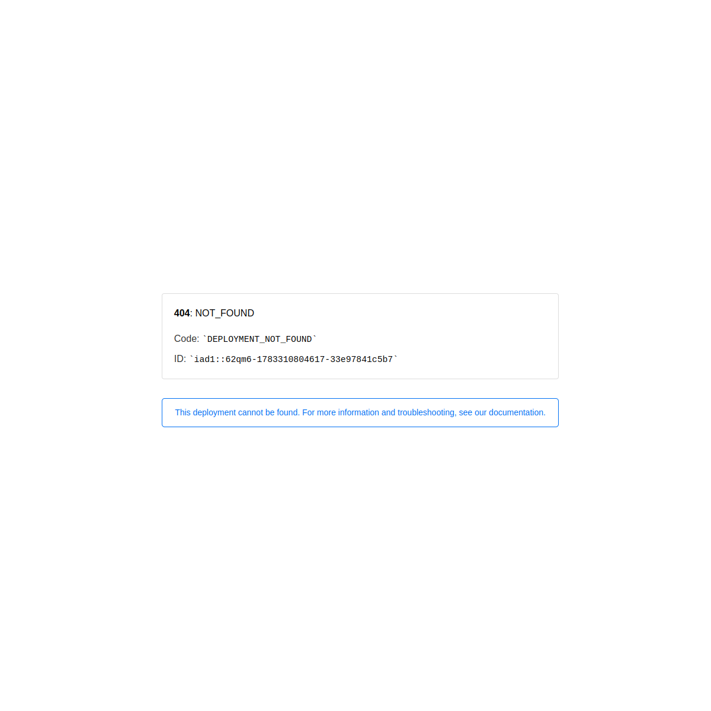
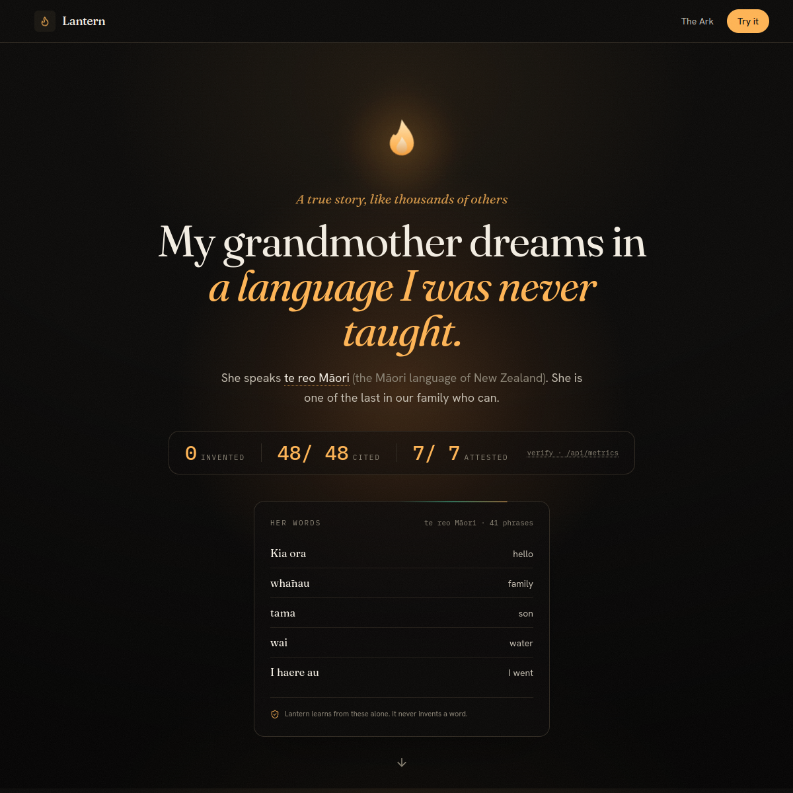
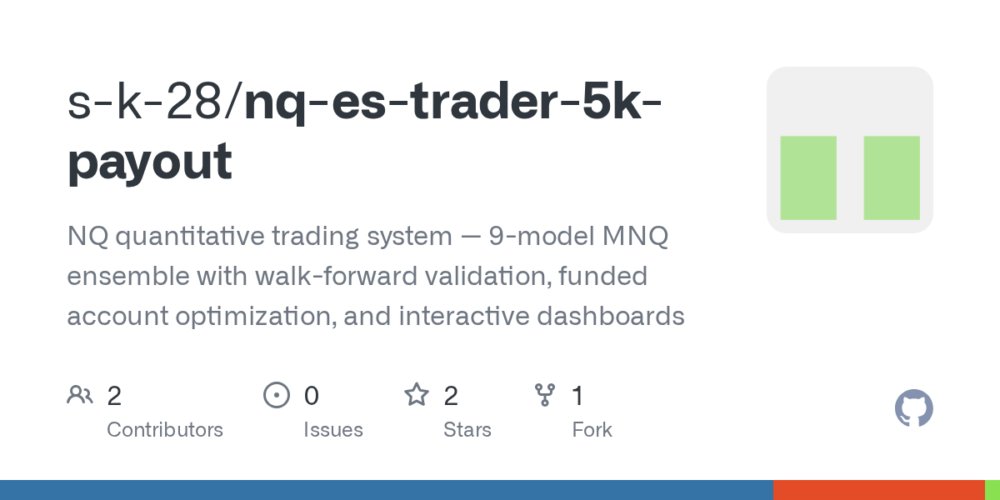
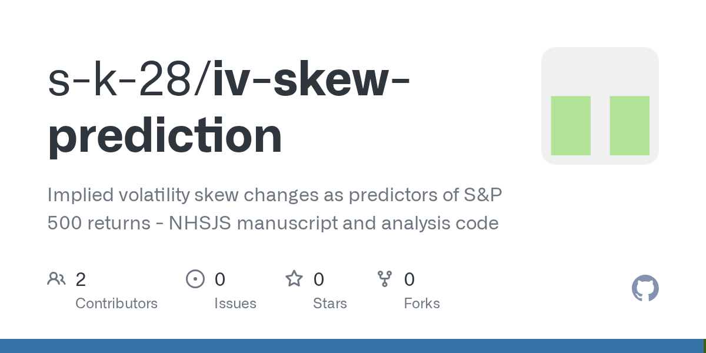
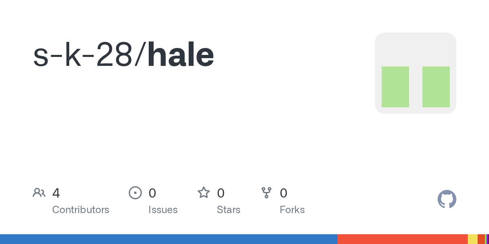

i'm a 16 y/o quant researcher and founder in McKinney, TX, class of 2028 at Emerson High School.
selected papers on volatility, fixed income, and language.
under review at The Journal of Fixed Income (2026)
We study whether changes in the implied-volatility skew of S&P 500 index options predict short-term forward returns. Sorting on daily skew changes, the top-minus-bottom quintile spread reaches -17.63 basis points with a bootstrap confidence interval that excludes zero, and the effect survives regime and control adjustments. The result points to dealer positioning and skew dynamics as a short-horizon predictive signal.
working paper (2026)
We extend the volatility-managed portfolio construction of Moreira and Muir (2017) from equities to US Treasuries. We find that changes in the MOVE index, that is, in implied volatilities, are the most effective indicator of when risk should be reduced. The volatility-managed portfolios earn Sharpe ratios significantly higher than buy-and-hold across every maturity, the positive alpha strengthens when MOVE changes are transformed to Gaussian equivalents, and the strategy still works with a zero floor on the notional to respect long-only constraints.
project paper (2026)
Lantern is an endangered-language tutor built around a provable anti-hallucination guardrail that refuses any word a real speaker never said. This paper describes the induction engine, the attested-corpus design, and the live metrics endpoint that audits zero fabrications and 100% source-cited output.
screenshots from projects, papers, and hackathon wins.

Relay1st place, aicoo HIVE1st place, insforge
Radialive on testflight
Euphoria1,000 on waitlist
Lanternzero fabrications Decodedcontracts to plain english
QuantX10.28 sharpe
Volatility Skewunder review, jfi
Haleapp store readyroles across quant research, founding, and product.
EDHEC Business School
Jan 2026 to Present
Co-author two quantitative finance papers with Prof. Riccardo Rebonato, former global head of Rates and FX Analytics at PIMCO. The first studies volatility skew shifts as predictors of short-term S&P 500 returns and is under review at The Journal of Fixed Income. The second extends volatility-managed portfolios into US Treasuries using changes in the MOVE index, recovering positive alpha and higher Sharpe ratios than buy-and-hold across maturities.
Connors Research
Apr 2026 to Present
Mentored directly by Larry Connors, founder of Connors Research and creator of the 2-period RSI mean-reversion model, in a one-on-one quantitative research mentorship. I lead recurring working sessions on quant model construction across options, index futures, and US equities, studying implied-volatility surfaces, option Greeks, term structure, and mean-reversion signal design. I iterate and backtest his systematic frameworks, integrate them with LLM-driven signal generation, and present options-microstructure and volatility-skew findings that he reviews directly.
QuantX
Jun 2025 to Present
Founded and built a Python-based quantitative trading system for index options, engineering a mean-reversion strategy across more than 15 years of historical options data. Designed the full pipeline from data ingestion and signal construction to vectorized backtesting, risk controls, and performance attribution. The system backtested at 173% annualized returns, a 10.28 Sharpe ratio, under 5% max drawdown, and $423K in simulated profit.
Simplify Asset Management
Jan 2026 to Present
Quantitative research intern mentored by Michael Green, CFA, Portfolio Manager and Chief Strategist. Conducted factor-return analysis and built stress-period correlation models across multiple market regimes for an equities ETF, quantifying how factor exposures and cross-asset correlations shift through volatility events. Translated the results into regime-aware positioning insights used to pressure-test portfolio construction.
Euphoria
Sep 2025 to Present
Co-founded a gamified investing-education platform for teens on web and mobile, leading product from concept to shipped application. Designed the core learning loop, gamification mechanics, and onboarding, and built the product to be COPPA and FERPA compliant from the ground up. Grew the platform to near 1,000 waitlist users and secured pilot school partnerships.
Radia
Jan 2026 to Present
Founded and engineered Radia, an AI skin-analysis iOS app built natively in SwiftUI that reads a selfie and returns a structured, personalized skin breakdown against a typed result contract. Owned the full mobile lifecycle from capture and inference to the Apple release pipeline. Shipped build 10 to TestFlight and drove it through the complete review process, with App Store submission in progress.
Hale
Jan 2026 to Present
Founded and built Hale, a cross-platform React Native app that helps people quit nicotine by pairing an AI quit-coach with real social accountability. Engineered daily streak check-ins and a moderated community feed on a Convex realtime backend, and integrated RevenueCat subscriptions, OneSignal push, PostHog analytics, and Sentry crash tracking. Cut App-Store-ready EAS production builds with universal links.
Fraxia
Feb 2026 to Present
Paid growth and product intern at a pre-seed startup, owning the full investor pipeline end to end. Engineered a targeted outreach system, scraping fund theses to match stage and check size, personalizing every message, and A/B testing subject lines, which secured more than 75 investor meetings at a 28% response rate. Also redesigned the product UI. Compensated $1.25K per month plus 10% equity.
ResellHub
Jan 2026 to Present
Co-founded and ran operations for a bootstrapped multi-platform e-commerce resale business spanning Mercari, Depop, and eBay. Built the sourcing, pricing, and listing workflow, optimizing inventory turnover and margin across channels, and handled fulfillment and customer communication end to end. Scaled it to $2.5K per month in revenue at 45% margins with more than 100K listing impressions.
Foundation Wealth Partners
Jan 2026 to Present
Develop compliant financial-literacy content for Euphoria's curriculum under the supervision of two Certified Financial Planners. Translate investing and personal-finance concepts into age-appropriate, regulation-aware lessons for a teen audience. Work directly with the CFP mentors to review accuracy and suitability, ensuring every module meets fiduciary and compliance standards before it reaches the product.
Private Tutoring Business
Jun 2024 to Present
Founded and operate a K-8 tutoring business, building it from a single client into a recurring-revenue operation. Designed individualized learning plans across core subjects, managed scheduling and billing, and tracked student progress to retention. Generated more than $18K in profit and $500 per month in recurring revenue across more than 150 sessions at 95% client retention.
Medium & Substack
Jan 2026 to Present
Write and publish long-form articles on quantitative finance, options trading, and financial literacy for a public audience. Cover technical topics including volatility surfaces, implied-volatility skew, and systematic trading strategies, distilling advanced concepts into accessible writing. Grew readership past 750 views and use the writing to sharpen and communicate my own research.
DECA School Store (Emerson High School)
Jan 2026 to Present
Marketing Manager for the Emerson High School DECA store, owning the store's social-media presence and go-to-market content. Built a trend-driven content strategy across channels, growing the following to 1.9K and generating more than 7K story views. Planned promotions, tracked engagement, and iterated on the content calendar weekly, driving a 250% increase in store sales.
NRIVA (Adopt A Student Program)
Jul 2025 to Present
Selected as a youth mentor through NRIVA's Adopt A Student program, a community education initiative run by the NRIVA Youth Committee. Provide one-on-one academic guidance and mentorship to students as a volunteer, helping them build study skills and confidence. Coordinate with the committee to match support to each student's needs.
Personify
Jun 2024 to Aug 2025
Produced social-media content and growth assets for the brand. Created content that generated more than 10K organic views and collaborated directly with a founder who has built over $400M in companies on growth initiatives. Learned to translate founder-level strategy into executable content campaigns that moved real audience metrics.
hand a goal to a swarm of ai agents living inside insforge; they plan, build, self-review, and ship it.
ai skin-analysis ios app in swiftui. reads a selfie, returns a personalized skin breakdown.
duolingo for dying languages, with an in-code guardrail that refuses any word a real speaker never said.
volatility skew shifts as predictors of short-term s&p 500 returns. Kodithyala and Rebonato, under review at The Journal of Fixed Income.
extends Moreira-Muir volatility-managed portfolios to US Treasuries using the MOVE index, recovering positive alpha and higher sharpe ratios. Rebonato and Kodithyala, EDHEC.
the writeup behind the endangered-language tutor: a guardrail that refuses any word a real speaker never said.
12-model futures ensemble with walk-forward validation; index-options system backtests at 173% annualized.
cross-platform react native quit-nicotine app: ai coach plus social accountability on convex.
no matches.